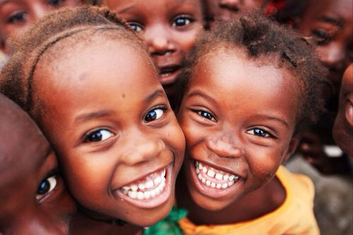
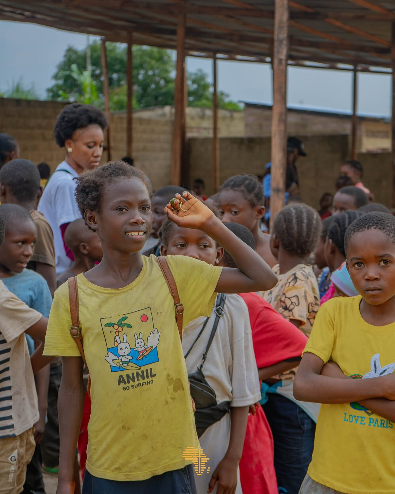
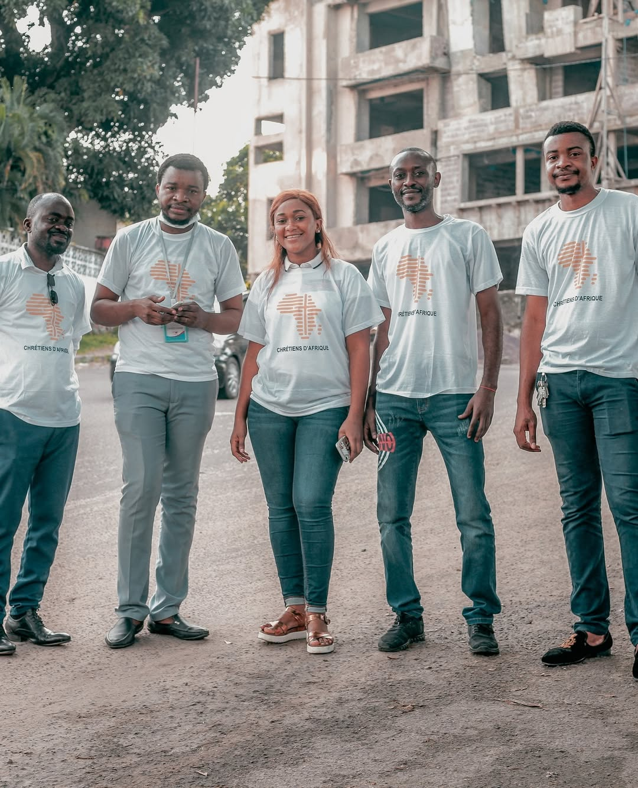
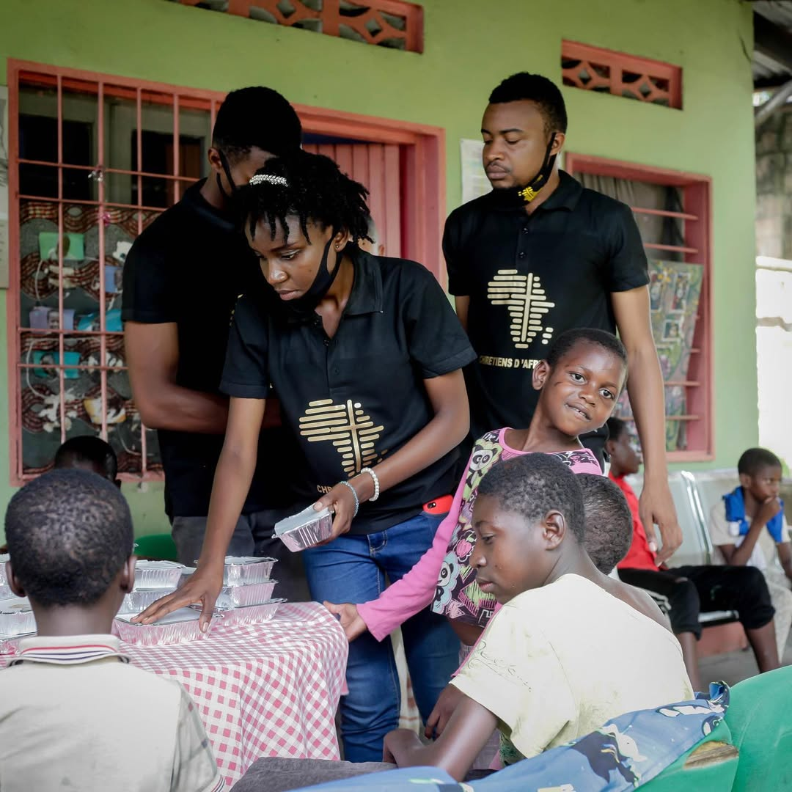
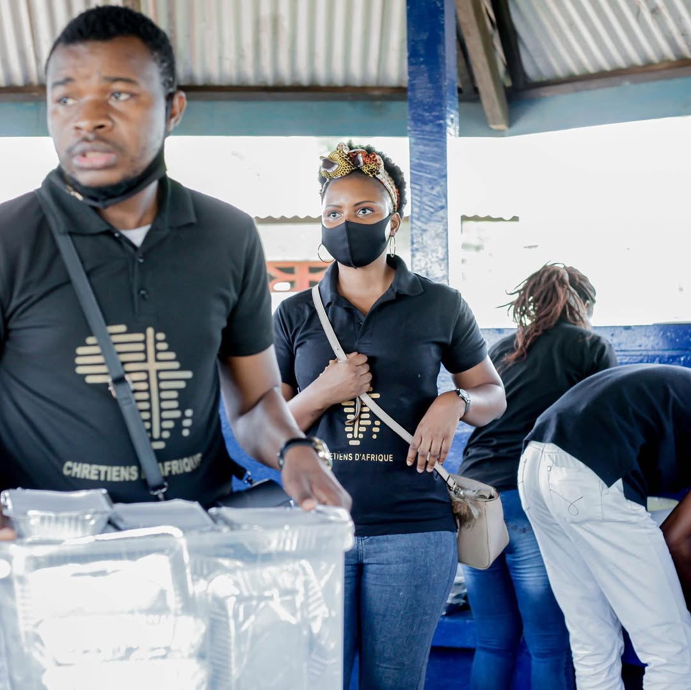

Impact humain
Des visages.
Des histoires vraies.
Ces images sont celles de notre réalité — la fondation sur le terrain, au cœur de Kinshasa.

La joie, fruit de chaque action
Des centaines d'enfants touchés chaque année

Chaque regard porte une histoire

Notre équipe — bâtisseurs au quotidien

Servir avec amour, chaque semaine

L'équipe CDA au cœur de l'action

Des bénévoles engagés, chaque jour